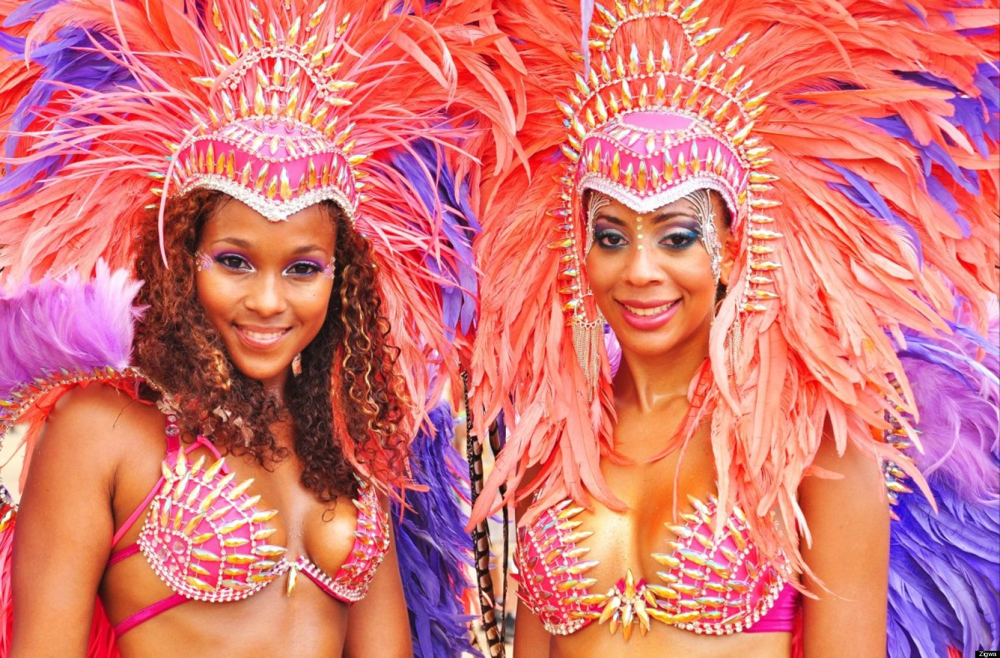

Winter
Christmas Day
(December 25)
Many people in the United States celebrate Christmas Day on December 25. The day celebrates Jesus Christ's birth. Many people erect Christmas trees, decorate their homes, visit family or friends and exchange gifts. In fact the holiday is celebrated not only in the US but all over the world.
Rhythm and Vines Festival
New Zealand (December 29-31)

Rhythm and Vines is New Zealand's premier New Year's Eve festival. The first festival in the world to welcome in the first sunrise of the new year. The festival was founded in 2003 by University of Otago friends Hamish Pinkham, Tom Gibson, and Andrew Witters.
Hogmanay Street Festival
Scotland (Dec,30-Jan,1)
Three days of spectacular events, incredible bands and amazing crowds from every corner of the globe. See Shetland Vikings bearing firelit torches, hear beautiful choral singing in St Giles' Cathedral, and watch incredible fireworks.
New Years Eve
(December 31)

New Year's Eve is a time to celebrate the end of the year and welcome a New Year. People also have nostalgia about events of the past 12 months.
Vienna Ball Season,
Austria (Dec,31-Feb,13)

Over 400 balls are staged each winter, frequented by 300,000 dance-loving visitors from all around the world. The reason for the carnival dates back to the 18th century, when the wearing of masks and costumes was reserved for the nobility, on private occasions.
Up Helly Aa Day
Schotland(last Tuesday of January)

Welcome to the official website for Up Helly Aa, which takes place in Lerwick, Shetland, on the last Tuesday in January every year. Up Helly Aa day involves a series of marches and visitations, culminating in a torch-lit procession and the burning of a galley.
Full Moon Party
Thailand (Jan 4)

With the global notoriety that the Full Moon Party has gained as being one of the biggest and best beach bashes in the world, we get more than our fair share of hedonists gracing our shores. Each year the scene grows with increasing number of party faithful.
Harbin International Ice and Snow Sculpture Festival
China(Jan.5- Feb.28)

These Harbin Ice Festival tours, going throughout the end of December to the end of February, have been adapted with handpicked hotels, theme parks, must-see attractions, and interesting activities that are best done in winter.
Open tennis
Melbourne, Au (Jan.19-Feb.1)
The Australian Open is a major tennis tournament held annually over the last fortnight of January in Melbourne, Australia. First held in 1905, the tournament is the first of the four Grand Slam tennis events of the year-the other three being the French Open, Wimbledon, and the US Open.
Jaipur Kite Festival
India (14 January)

Jaipur is the land of fairs and festivals. Always dipped in the colours of festival, this place enchants anyone who experiences the glory of fests. Festival of every religion is celebrated with same zeal and gusto.
Martin Luther King Day
USA(January 26)

Martin Luther King Day is a federal holiday held on the third Monday of January. It celebrates the life and achievements of Martin Luther King Jr., an influential American civil rights leader.
Australia Day
Australia Day (26 January)
The tradition of having Australia Day as a national holiday on 26 January is a recent one. Not until 1935 did all the Australian states and territories use that name to mark that date. Not until 1994 did they begin to celebrate Australia Day as a public holiday.
Venice Carnival
Italy (Jan.31-Feb.17)

The Carnival of Venice is an annual festival, held in Venice, Italy. The Carnival ends with the Christian celebration of Lent, forty days before Easter on Shrove Tuesday, the day before Ash Wednesday. The festival is world-famed for its elaborate masks.
Khajuraho Festival
India (Feb.20-26)

Up Helly Aa takes place in Lerwick, Shetland, on the last Tuesday in January every year. Up Helly Aa day involves a series of marches and visitations, culminating in a torch-lit procession and the burning of a galley.
Yuki Matsuri Snow Festival
Japan (Feb.5-11)

The Sapporo Snow Festival is a festival held annually in Sapporo, Japan, over seven days in February. Odori Park, Susukino, and Tsudome are the main sites of the festival. The 2015 Snow Festival dates are 5 to 11 February.
Dubai Shopping Festival
Dubai (Jan.1-Feb.1)
Dubai Shopping Festival is the largest shopping and entertainment extravaganza in the Middle East. From international concerts and shows, to sports and fashion events, DSF caters to every age segment.
Waitangi Day
New Zealand (Feb.6)
Waitangi Day is a public holiday held on 6 February every year to commemorate the signing of New Zealand's founding document - the Treaty of Waitangi - in 1840. The national holiday was first declared in 1974, and since then has grown in significance for all New Zealanders.
Barcelona Carnival
Spain (Feb.12-18)
Carnival is the time of joy, exuberance and joie de vivre, before Ash Wednesday when the 46-day Lent to Easter begins. Carnival is celebrated as in Central Europe. One disguises oneself, there are carnival events and parades, which are almost as colourful as in Cologne or Mainz.
New York Fashion Week
New York (Feb.12-19)
New York Fashion Week, held in February and September, is a semi-annual series of events when fashion collections are shown to buyers, press and general public. It is one of 4 fashion weeks along with one in Paris, London and Milan.
New Orleans Mardi Gras
USA (Feb.13-17)

Mardi Gras is a whole season. Fat Tuesday is the biggest day of celebration, and the date it falls on moves around. It can be any Tuesday between Feb. 3 and March 9. Carnival celebration starts on Jan. 6,and picks up speed through midnight on Fat Tuesday.
Rio De Janeiro Carnival
Brazil (Feb.13-18)

Carnival with all its excesses, celebrated as a profane event, could be interpreted an act of farewell to the pleasures of the flesh. It is usually in February, the hottest month in the Southern Hemisphere, when summer in Rio is at its peak.
Valentine's Day
(February 14)

Each year on February 14th, many people exchange cards, candy, gifts or flowers with their special 'valentine'. The day of romance we call Valentine's Day is named for a Christian martyr and dates back to the 5th century, but has origins in the Roman holiday Lupercalia.
Cologne Carnival
Germany (Feb.16-18)

Traditionally the gathering of the colourful Corps troops can be seen on Saturday at the Neumarkt. On Carnival Sunday school groups and borough parades take place all over the city. Carneval ends two days later on Ash Wednesday.
Shrove (Pancake) Tuesday
(February 17)
Pancake Day is the traditional feast day before the start of Lent on Ash Wednesday. Lent was traditionally a time of fasting and on Shrove Tuesday, Anglo-Saxon Christians went to confession and were "shriven".
Chinese New Year
Chinea(February 19)

Spring Festival, widely known as Chinese New Year in the West, is the most important traditional festival, and most important celebration for families in China.
Carnavals arround the World
(February-beg of March)

Carnival season is fast approaching...